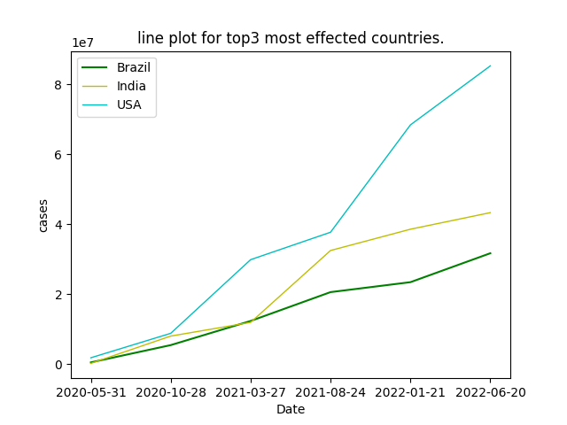
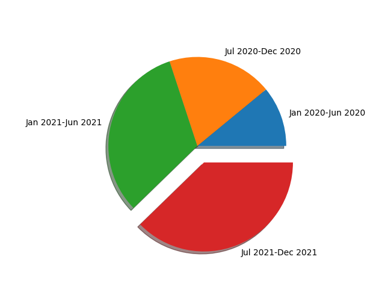
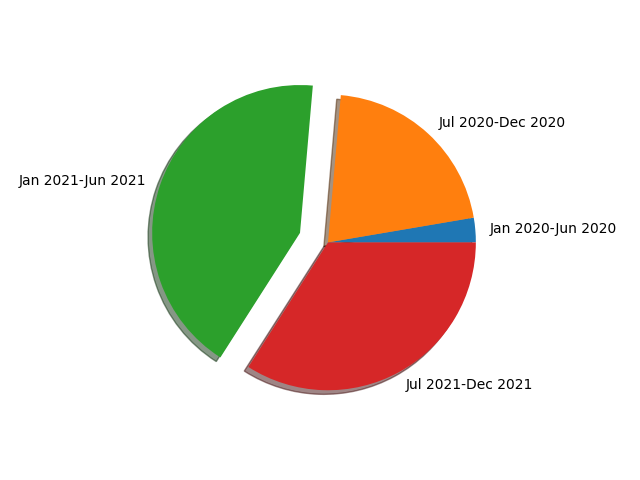
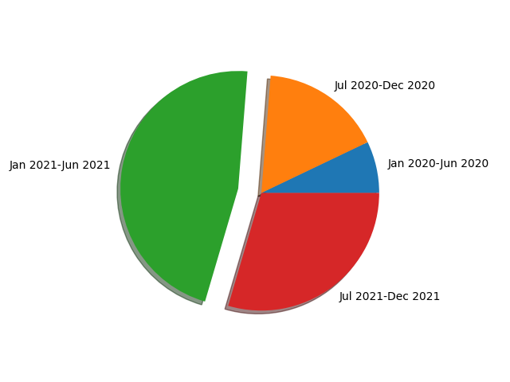
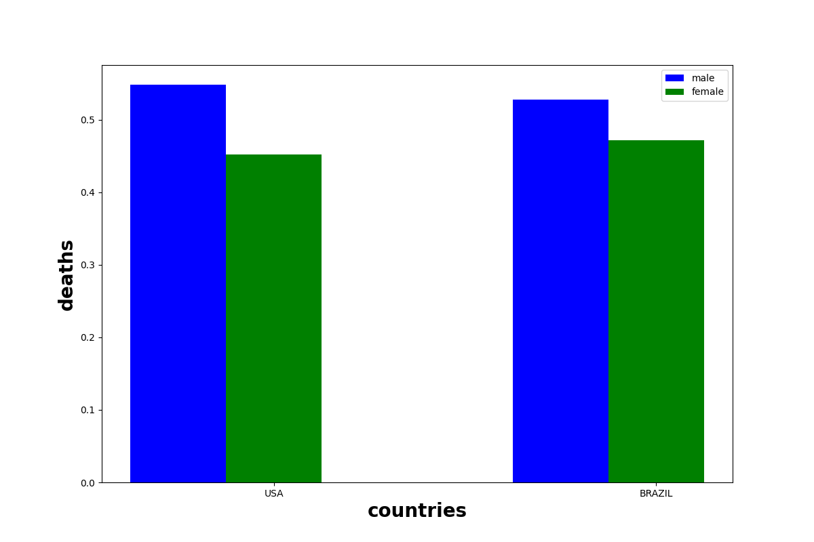
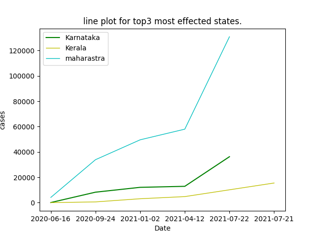
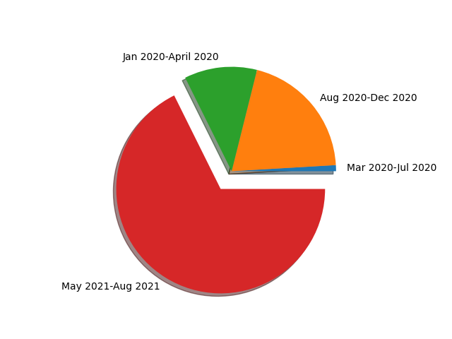
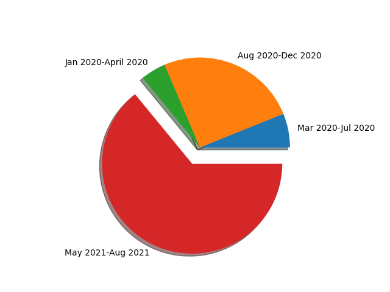
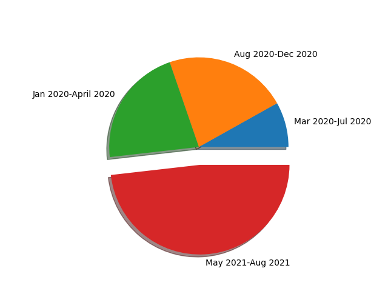

The coronavirus from China has spread globally since January 2020 and has become a pandemic.
This project aims in finding the top3 most effected
countries over the globe based on cumulative cases and deaths gathered from the dataset.
Top3 most effected countries:
This graph was a cumulative line plot of 3 lines corresponding to top3 countries.The top three most effected countries are USA,INDIA,BRAZIL respectively.On the x-axis we have taken different dates across the 2 year pandemic period and on y-axis cummulative deaths across these 2 years.After plotting we got below graph.We can observe USA curve is above India eventhough India population is high.
Deaths in USA between 2020-2021:
Covid Pandemic stayed around 2 years,so we divide it into 4 parts [Jan 2020-Jun2020,July2020-Dec2020,Jan2021-June2021,July2021-Dec2021] and plotted 3 pie plots corresponding to 3 countries to find which time period has most covid cases.In USA most deaths happend in the time period July2021-Dec2021.
Deaths in India between 2020-2021:
There was lockdown in INDIA in 4 Phases Phase 1: 25 March 2020-14 April 2020 (21 days) Phase 2: 15 April 2020-3 May 2020 (19 days) Phase 3: 4 May 2020-17 May 2020 (14 days) Phase 4: 18 May 2020-31 May 2020 (14 days).Around 75% of deaths happend in 2021 only.Mainly from Jan2021-June2021 most number deaths happend in these 4 parts.
Deaths in Brazil between 2020-2021:
In brazil most number of deaths happend in Jan2021-June2021.
USA and BRAZIL Male and Female death ratio:
Eventhough USA has more deaths than BRAZIL, the male and female death ratio is almost same, this shows covid has approximately same effect on males and females eventhough most male people go out for work purpose or buy basic needs etc.
Top3 most effected states:
Below is a cumulative line curve of most affected 3 states in India. This graph ilustrates that Maharashtra's curve is considerably at high position than Kerala and Karnataka.Kerala and Karnataka were approximately on same page. Maharashtra has second most highest population in India, and this can be a factor which could explain the curve.
Deaths in kerala between 2020-2021:
Below is a pie chart which gives a high level view of which time period we have seen the highest fracton of deaths due to covid. In kerala it is May to August in the year 2021. Also Kerala has less deaths in the period March 2020 to June 2020. It shows Kerala was not that effected in initial Phases of covid but later it has increased.
Deaths in karnataka between 2020-2021:
Karnataka also has similar trend and has most of its death in the time period May 2021 to August 2021. In the rest of the 3 time periods also it has considerable amounts of deaths .
Deaths in Maharastra between 2020-2021:
In Maharashtra as we can see half of its total deaths due to covid have happend in same period as remaining states that is May 2021 to August 2021 . The other half of the deaths were some what evenly distributed across remaining 3 time periods . This shows Maharashtra has been facing deaths due to covid from the beginning of the pandemic . The huge population and the conjusted streets might be a factor of its wide spread of covid virus.
